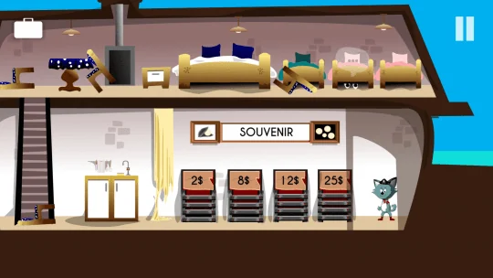
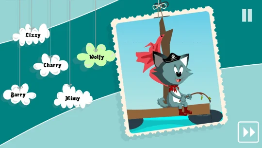

Google Play
Сейчас публичная оценка не отображается.
100+
Открыть страницу и отзывыПриключения point-and-click · iOS, Android, Windows, macOS, Linux
Ваши друзья в плену, им нужна помощь.
Узнать больше ↓
Исследуйте остров, ищите подсказки и используйте собранные предметы для решения загадок. Tiny Story 2 продолжает яркую серию point-and-click с героями-животными, необычными встречами и новым приключением по спасению друзей.


Сейчас публичная оценка не отображается.
100+
Открыть страницу и отзывы5.0
Открыть страницу и отзывыОценки показаны отдельно для каждого магазина и могут различаться по странам и со временем.
Актуальную доступность, цены и языки игры смотрите на официальной странице магазина.
Прохождения доступны на английском и французском. На страницах игр также есть ссылки на видео с прохождением.